Each mock-up is the real game, from a saved run, shot as it is today and again with the proposed change drawn into the live page in the game's own fonts and colours. Map additions (paths, people, pennants, a staked plot) are painted over the screenshot. Numbers are the save's own except where a note says otherwise.
Class places come from courses, 80 a course. Today only a chapter paragraph says so. These three changes put it on the screens where the limit bites and where the player can act on it.
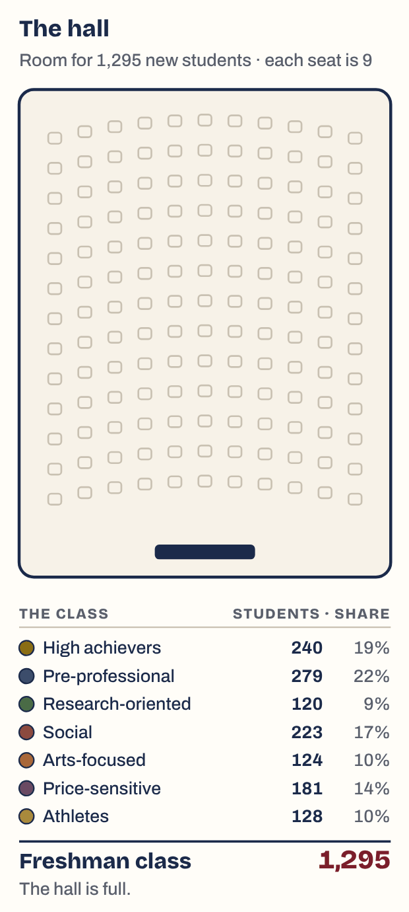
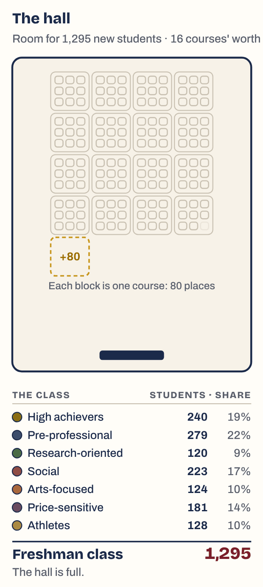
The same seats, grouped. Each block of nine seats is one course's 80 places, since a seat here stands for nine students. The dashed gold block is the course you haven't developed yet. When the hall is full, its cause is in the picture: not enough blocks.
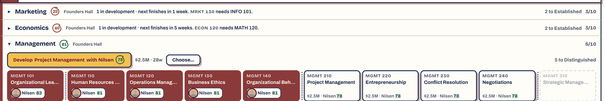
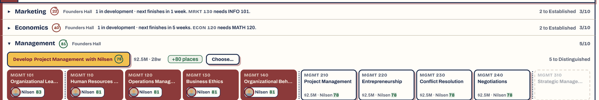
The one place the lever is pressed says what it gives. The chip only shows while class places are short, so it means something when it appears.
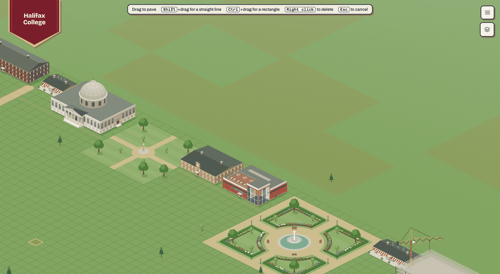
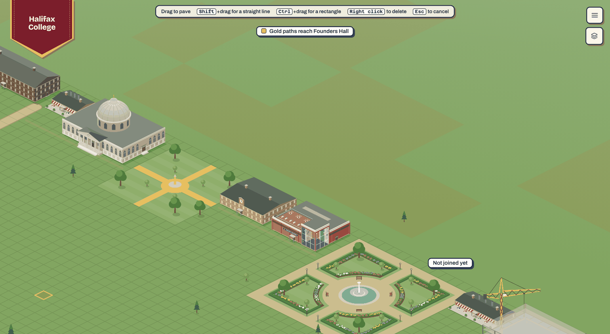
Paths joined to Founders Hall turn gold; anything not joined stays plain, so a path that stops one tile short shows itself. In the real version a building's doorstep also lights when the network reaches it.
Today the links from curriculum, research, student life and athletics into prestige are only text in the summer review and History. One small figure carries them instead.
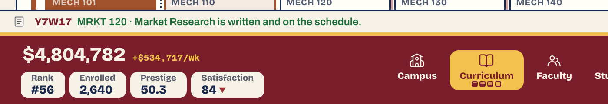
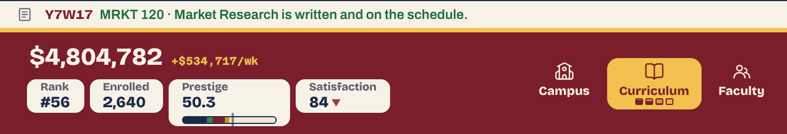
The bar under the number is prestige split by pillar: academics (navy), research (green), student life (maroon) and athletics (gold). The thin tick is where prestige is heading. The gap between the fill and the tick is the lag the summer's cap creates, which today nothing shows.
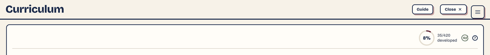
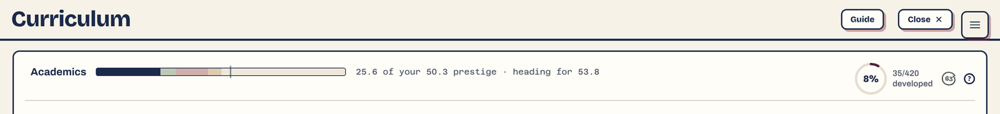
On Curriculum the academics part is lit and the others fade. Research, Students and Athletics do the same for theirs. At the summer the bars fill, in place of the "stands at N of 150" lines that PR B cuts.
Note: the pillar split (25.6, 6.1, 13.3, 5.3) and the target (53.8) are illustrative; the save's total of 50.3 is real. The chip grew a few pixels taller here. The real one would fit the bar inside today's chip height, and needs checking at 1280×720.
Two facts that live only in words today: a course with no teacher, and a need the campus is short of.
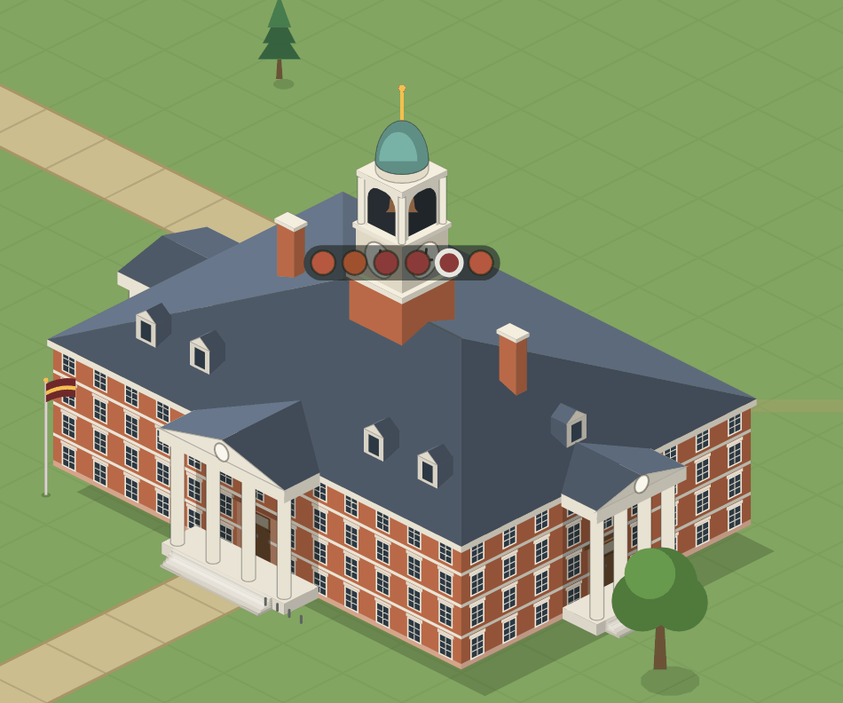
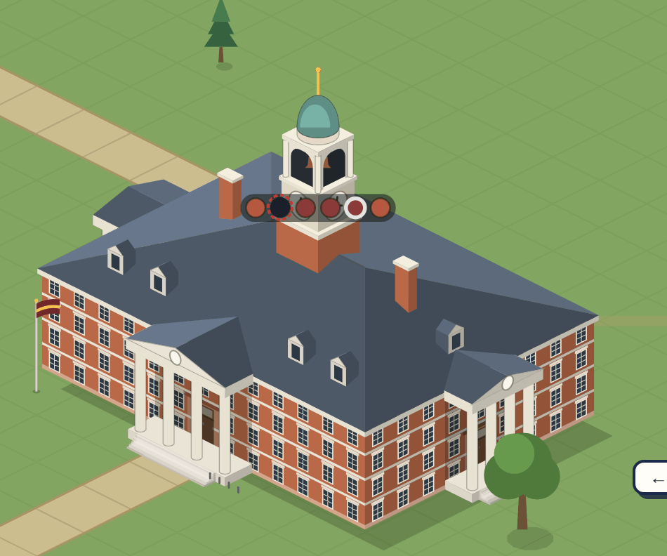
The program's dot above the hall goes dark with a red ring while one of its courses has no teacher, and comes back when someone is appointed.
A change from the plan, for you to confirm: the plan said "a dark window per course". At the closest zoom a window is three or four pixels wide, and darkening one barely shows; I tried it. The hall already has a dot per program, so darkening the dot reads at normal zoom and reuses a signal players know. I'd make PR L use the dot unless you'd rather keep windows.
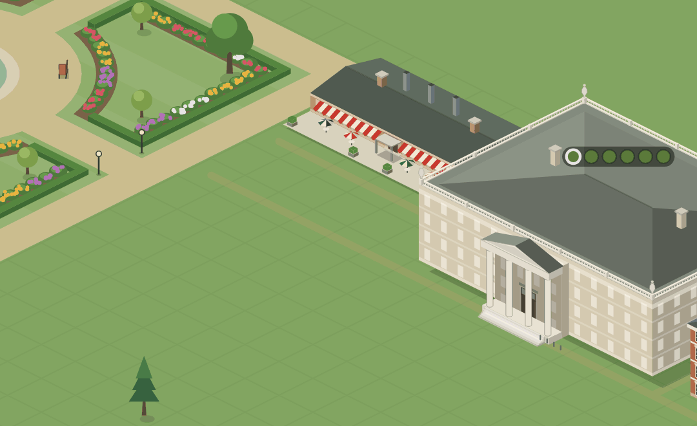
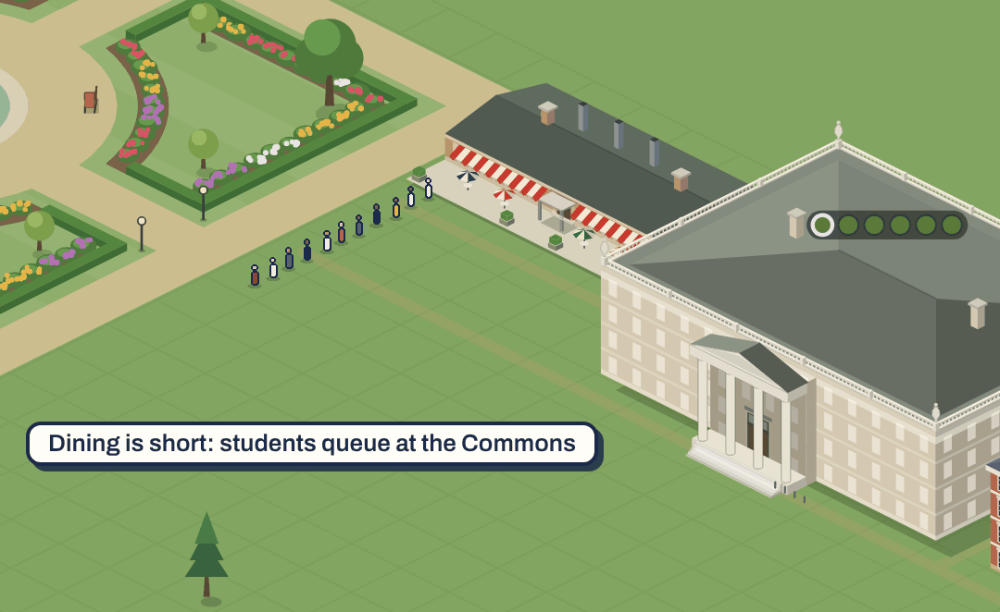
While dining is under 100, students line up at the dining hall's door; the clinic does the same for health. The line grows with the shortfall and clears when a new hall opens. The figures here are stand-ins; the real queue would use the game's walkers.
The three largest moments of a run get less feedback today than placing a gazebo. Each of these leaves something behind or plays out in steps.
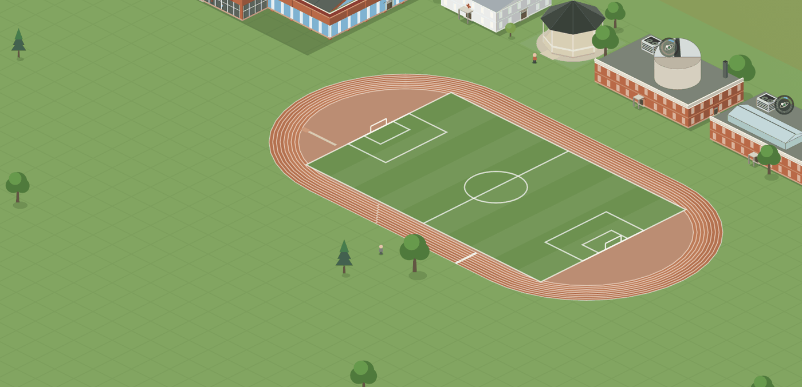
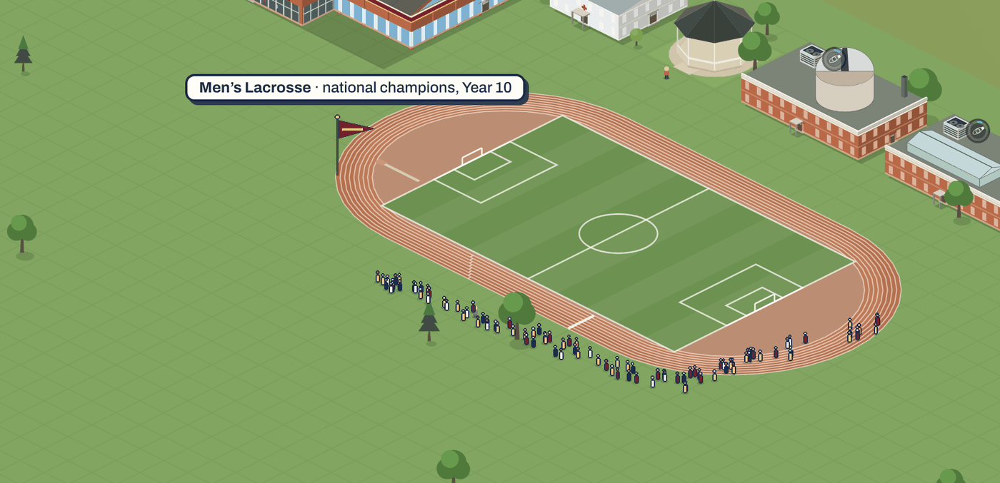
A pennant in the college's colours goes up at the venue for good, one per title, stacking. The week of the title the venue fills with a crowd. The title's page in the Inbox stays, as you chose.
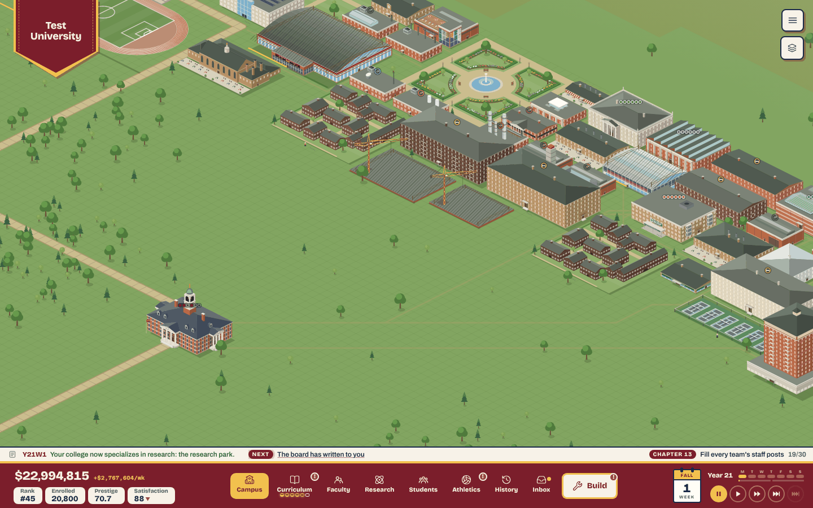
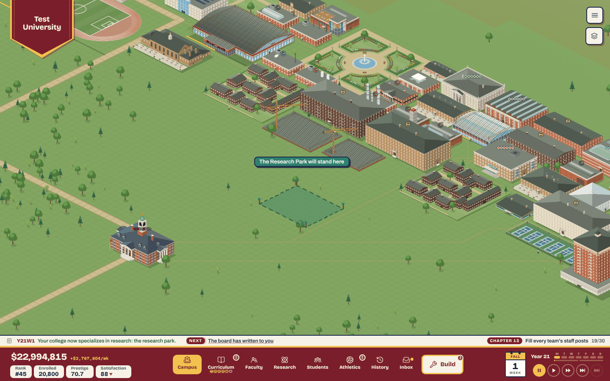
On Confirm the camera eases to where the pillar's capital project will stand, the plot is staked out in the pillar's colour, and the fanfare plays. The ticker line and the board's letter stay.
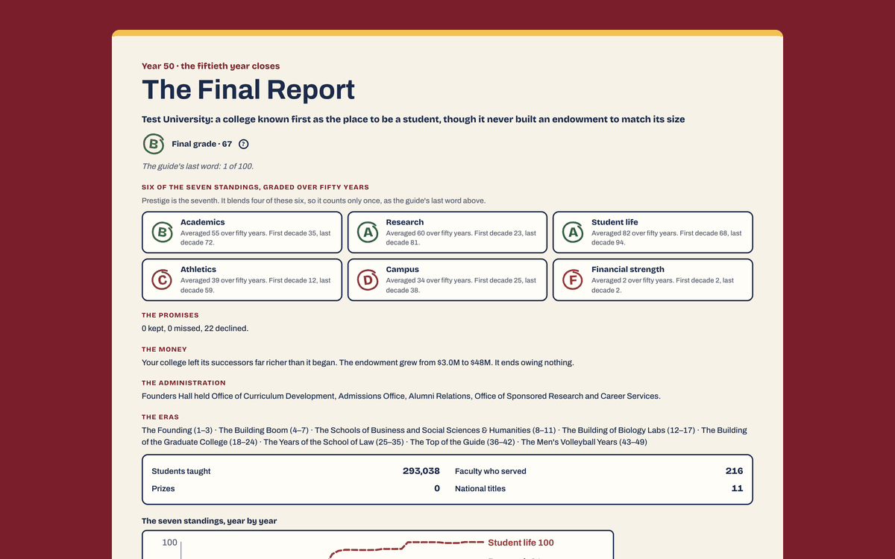
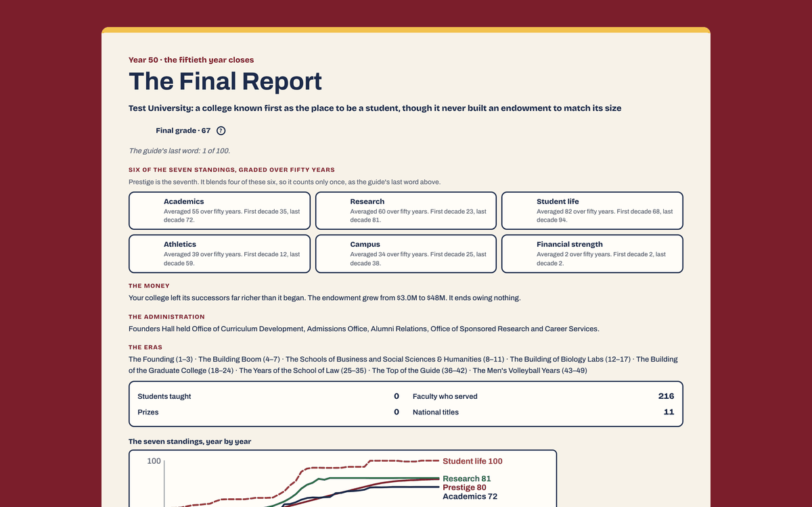
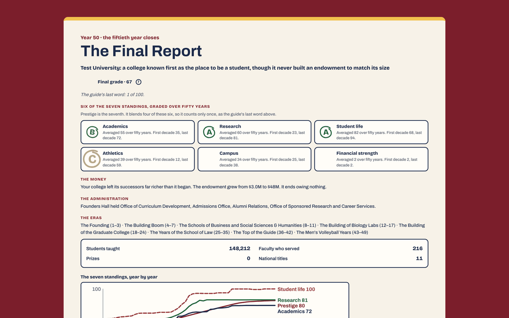
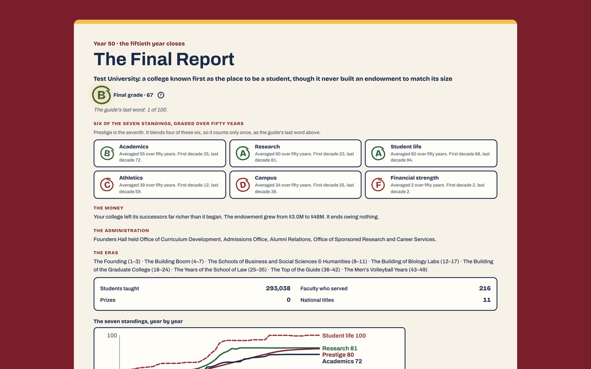
The six grades stamp in one at a time with a tick each, "Students taught" counts up, and the fanfare plays as the final grade lands, instead of after the report has been read. The promises line is gone because PR E removes promises.
Not shown: the report opening over the campus. In these stills it still opens on the maroon backdrop; the real version would show the finished campus behind the first beat.